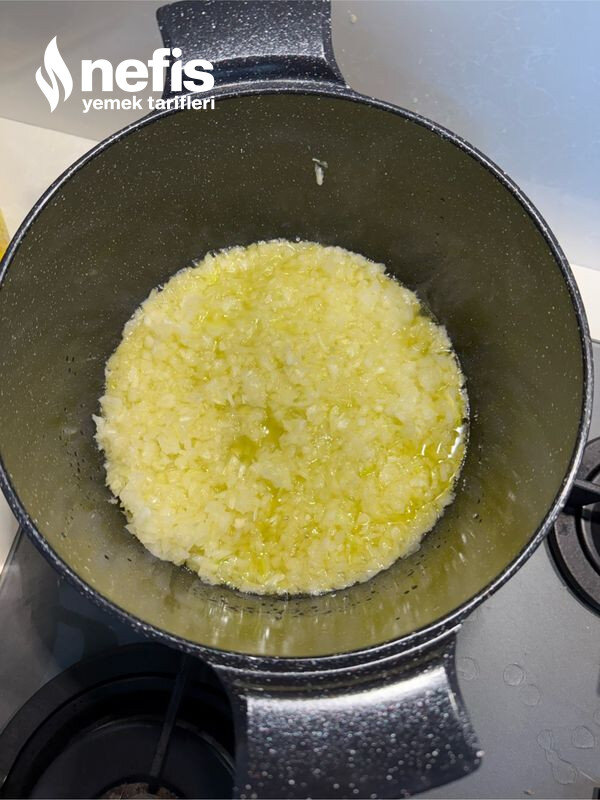

🍽️ 8-10 kişilik⏱️ Hazırlık: 15 dk🔥 Pişirme: 25 dk🏷️ Salata & Meze & Kanepe
Malzemeler
- 2 su bardağı nohut
- 2 adet soğan
- 4-5 adet yeşil biber
- 2 adet kırmızı kapya biber
- 1-2 adet domates
- 1 yemek kaşığı salça
- Yarım su bardağı kadar haşladığımız nohutun suyu
- Kıyılmış maydanoz
- Karabiber
- Pulbiber
- Tuz
- Yarım kg yoğurt
- 2 diş sarımsak
- 3-4 kaşık zeytinyağı
- Tuz
- Kırmızı toz biber
Hazırlanışı
- 2 su bardağı nohutu akşamdan biraz tuz koyarak ıslatıyoruz.
- Sabah nohutu haşlıyoruz ( haşlanınca 7 su bardağı civarında oluyor).
- Diğer yandan sıvı yağda minik doğradığımız soğanları kısık ateşte iyice kavuruyoruz.
- Kavrulmasına yakın yine minik doğradığımız kırmızı ve yeşil biberleri ilave ederek kavurmaya devam ediyoruz.
- Kavrulunca küçük doğradığımız domatesleri de ilave ediyoruz.
- Salça da ilave ediyoruz.
- Hepsi kavrulunca pulbiber, karabiber ve tuz ilave ediyoruz.
- Suyunu süzdüğümüz nohutları ilave ederek biraz karıştırıp nohutun suyundan yarım su bardağı kadar ilave edip tencerenin kapağını kapatıyoruz.
- Suyunu çekince ocağı kapatıyoruz.
- Sarımsaklı yoğurdu hazırlıyoruz.
- Nohutlu karışım ılınınca yoğurt ile karıştırıyoruz.
- Maydanoz ilave ediyoruz.
- Yağı ısıtıp tuz ve toz biber ilave ediyoruz ( isteğe bağlı).(gün için hazırlanacaksa: kaselere koyup üzerini kırmızı biberli yağ gezdirip maydanoz serpiyoruz).
- Servis tabağına alarak üzerine kırmızı biberli yağ gezdirip maydanoz serperek servis ediyoruz.